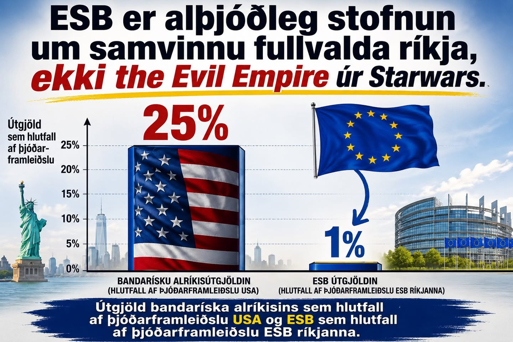

Ein tala setur ESB-umræðuna í samhengi: útgjöld ESB hvert ár samsvara um 1% af vergum þjóðartekjum ríkjanna sem mynda sambandið. [1] Þið lásuð það rétt: 1 af hundraði. Til samanburðar eru útgjöld bandaríska alríkisins um fjórðungur af VLF Bandaríkjanna. [2] Og ef við lítum til heildarútgjalda hins opinbera — ríkis, fylkja, sveitarfélaga og almannatryggingakerfa — eru þau um 38% af VLF í Bandaríkjunum, 57% í Frakklandi, 51% á Ítalíu og 49% í Þýskalandi og Svíþjóð. [3]

Við erum aldrei að ganga inn í eitthvað Vetrarbrautarveldi úr Stjörnustríði.
Miðað við umræðuna dettur manni helst í huga að það sé einhver misskilningur á ferðinni hvað ESB einfaldlega er. Þetta er samstarfsverkefni 27 fullvalda þjóða sem telja 450 milljónir manns. Það er talað um ESB eins og eitthvert sjálfstætt alríkisríki líkt og Bandaríkin; af máli Miðflokksins að dæmi er engu líkara en hér sé á ferðinni The Evil Empire úr Star Wars. Alþingiskonan Sigríður Andersen varpaði jafnvel fram þeirri fáránlegu tilgátu að ESB gæti tekið upp herskyldu á Íslandi! Lengra getur vitleysan varla gengið.
ESB er ekki ríki, hvað þá stórveldi, sem stendur utan og ofan við fullvalda aðildarríki. ESB er samstarf 27 fullvalda ríkja sem hafa ákveðið að fara sameiginlega með afmörkuð verkefni, fyrst og fremst á sameiginlegum innri markaði í gegnum þessa alþjóðlega stofnun sem heitir ESB. Það er ekki eitthvert „stórveldi“ sem girnist auðlindir og eigur einstakra svæða. ESB á engar auðlindir; þær eru í þjóðríkjunum sem samstarfið mynda og lögsögu þeirra, þótt sameiginlegar reglur geti gilt á tilteknum sviðum.
Stofnun sem stýrir samstarfi 27 sjálfstæðra ríkja og eyðir 1 prósenti af vergum þjóðartekjum ESB-ríkjanna er ekki sjálfstætt „sambandsríki“ í neinni eðlilegri merkingu þess orðs. ESB er fyrst og fremst i) samvinna til að koma á fjórfrelsi milli aðildarríkja. Þetta þýðir: frjálst flæði vöru, þjónustu, fólks og fjármagns til þess að reyna að búa til stærri og öflugri markað. Markaður er auðvitað mannanna verk; þetta er „stofnun“ sem er sköpuð og varin af stjórnvöldum, samansafn reglna um eignarhald, viðskiptahætti o.s.frv.
Stærsti hluti regluverks ESB snýr að þessu eina verkefni: fjórfrelsinu. Það er stórvaxið verkefni sem gefur ESB mikil völd. Með þáttöku í þessum sameiginlega markaði framseldu aðildarríki vissulega hluta af fullveldi sínu. En staðreyndin er þessi: Við erum nú þegar hluti af fjórfrelsinu. Við erum nefnilega í EES og Schengen. Reglugerðirnar sem ramma inn fjórfrelsið eru í dag sendar í pósti til Alþingis. Þar eru lögin svo stimpluð og innleidd án þess að Íslendingar komi þar nokkuð við sögu. Því við erum ekki í ESB.
Hvað bætist þá við þetta samstarf, ESB, miðað við það sem við nú þegar höfum. Og hver er kosnaðurinn og ábatinn. Stærsti ábatinn af auknu samstarfi er: i) þátttaka í tollabandalagi ESB. Stærri ríki eru farin að nota tolla sem tæki til að ná fram markmiðum sínum. Með hruni stofnanaumgjarðar frjálsrar verslunar má allt eins búast við að slíkt aukist; ii) aukið varnarsamstarf — ESB er eðlilegur arftaki NATO um varnarsamstarf evrópskra vestrænna lýðræðisríkja ef Bandaríkin draga sig út, sem ég tel ekki líklegt, en hugsanlegt. Það er nú þegar vísir að samstarfi af þessu tagi; iii) við getum tekið upp evru. Á því eru kostir og gallar, en ég tel kostina vega þyngra, því vaxtakostnaður heimila og fyrirtækja yrði töluvert lægri og stöðugleiki í verðlagi myndi loksins nást.
Og hvað er svo meira eftir? Sáralítið frá sjónarmiði flestra ESB-ríkja. Það eru hins vegar tveir hlutir í samstarfinu sem eru mikilvægir Íslendingum: iv) stefna í landbúnaðarmálum; v) sameiginleg fiskveiðistefna.
Ef Ísland gengi í þetta samstarf 450 milljóna manna yrði okkar litla 400 þúsund manna þjóð sú ESB þjóð sem veiðir mestan fisk, talið í tonnum. Jepp, Ísland yrði stærsta fiskveiðiþjóð ESB. Uppruni sameiginlegu fiskveiðistefnunnar er að þjóðir í ESB voru að fiska úr sömu veiðistofnum. Það kann ekki góðri lukku að stýra og auðvitað þurfti einhvern veginn að ná samkomulagi um að skipta kökunni. Þetta gildir ekki um Ísland, því okkar fiskistofnar eru að mestu staðbundnir.
Ef ríkin sem mynda ESB telja að það styrki samstarfið að fá Ísland í hópinn, og mér sýnist svo vera, þá held ég að fiskveiðistefnan sé umsemjanleg. Hún er ekkert lóð á vogarskálum 450 milljóna manna innri markaðar. Fiskveiðar og fiskeldi standa undir innan við 0,3% af verðmætasköpun Evrópusambandsins. [4] Hvernig fiskveiðum er hagað upp á Íslandi skiptir því litlu sem engu fyrir sambandið. Mér þykir því alls ekki ólíklegt að yfirráð Íslands yfir fiskveiðistjórn innan 200 mílna efnahagslögsögunnar geti verið hluti af aðildarsamningi eða bókun við aðildarsamning Íslands og ESB, sem þá er ekki hægt að breyta. En auðvitað veit ég ekkert um það. Það verður að koma í ljós í samningum.
Hvað landbúnaðarstefnuna varðar þekki ég það efni ekki nægjanlega vel til að hafa myndað mér skoðun. En ég held að það sé mikilvægt að vernda íslenskan bústofn, líkt og hesta, og svo kann matvælaöryggi líka að skipta máli. En ég á eftir að kynna mér þessi mál.
Mér sýnist því vel mögulegt að við gætum náð hagstæðu samkomulagi við önnur 27 sjálfstæð og fullvalda ríki sem nota ESB sem samvinnugrundvöll um afmörkuð mál. Hvernig sem þetta fer erum við þó aldrei að ganga inn í eitthvað Vetrarbrautarveldi úr Stjörnustríði. Það er eins og stærsti hluti umræðunnar sé á villigötum að þessu leiti— Öxar við ána, Jón Sigurðsson, Íslandi allt, o.s.frv. Þetta snýr ekki að kjarna þess sem við erum að taka afstöðu til. Ísland verður alltaf Ísland, eins og Frakkland er Frakkland og Danir eru danskir, hvernig sem atkvæðagreiðslan í ágúst fer.
[1] European Court of Auditors (2026). The EU’s finances. Available at: https://www.eca.europa.eu/en/the-eu-finances
[2] Congressional Budget Office (2025). The Budget and Economic Outlook: 2025 to 2035. Available at: https://www.cbo.gov/publication/60870
[3] International Monetary Fund (2026). Government expenditure, percent of GDP. IMF DataMapper. Available at: https://www.imf.org/external/datamapper/exp@FPP
[4] European Commission, Directorate-General for Maritime Affairs and Fisheries (2025). The EU Blue Economy Report 2025. Available at: https://op.europa.eu/webpub/mare/eu-blue-economy-report-2025/